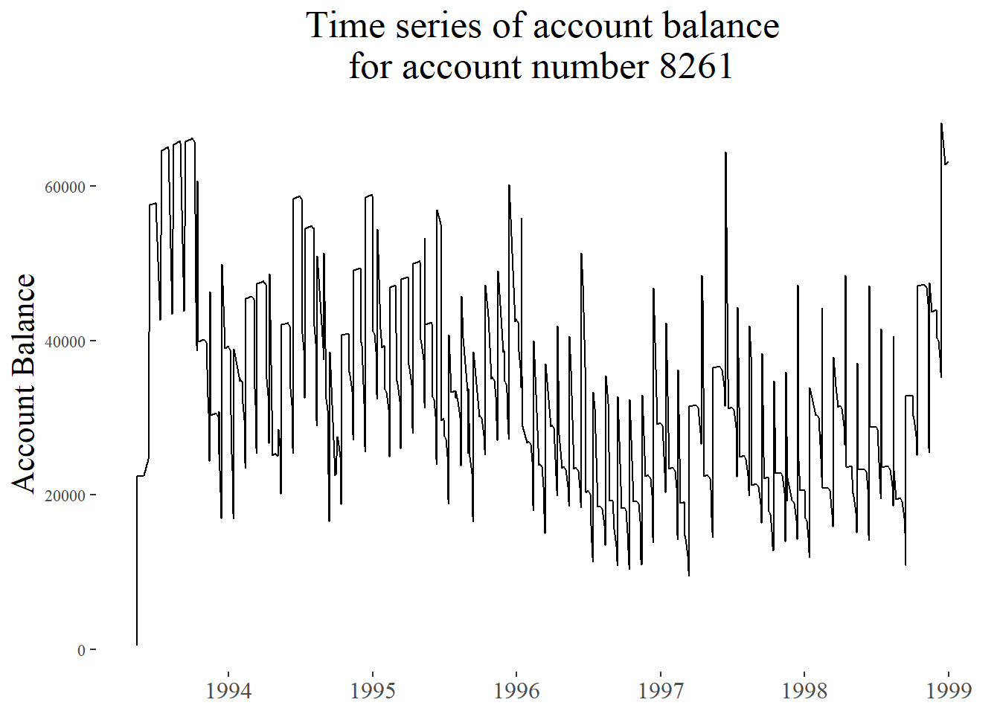
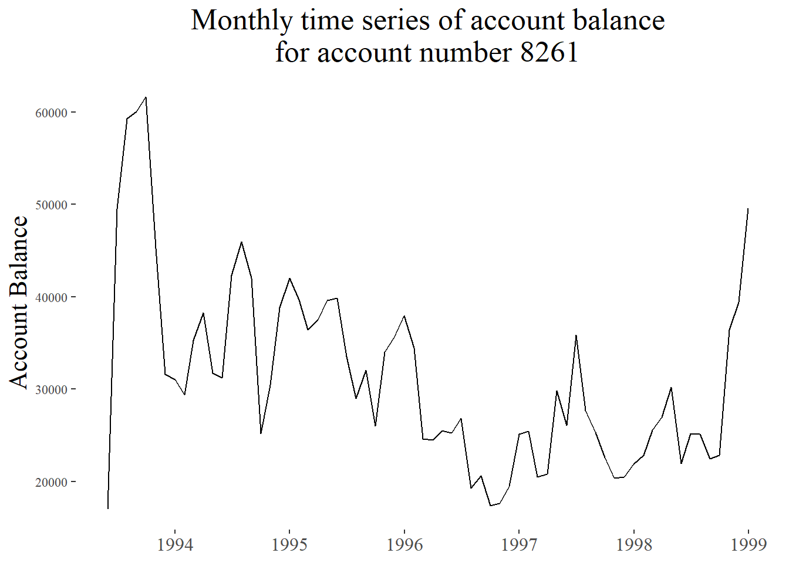
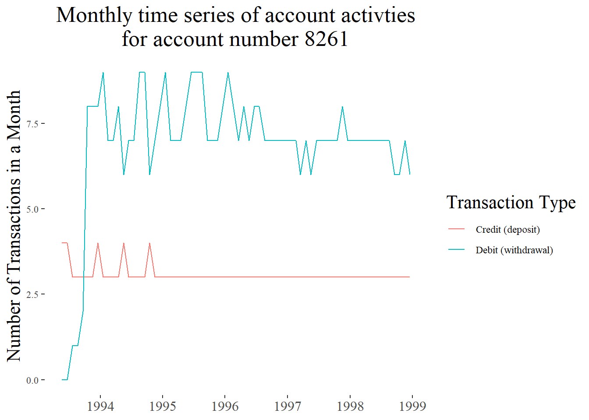
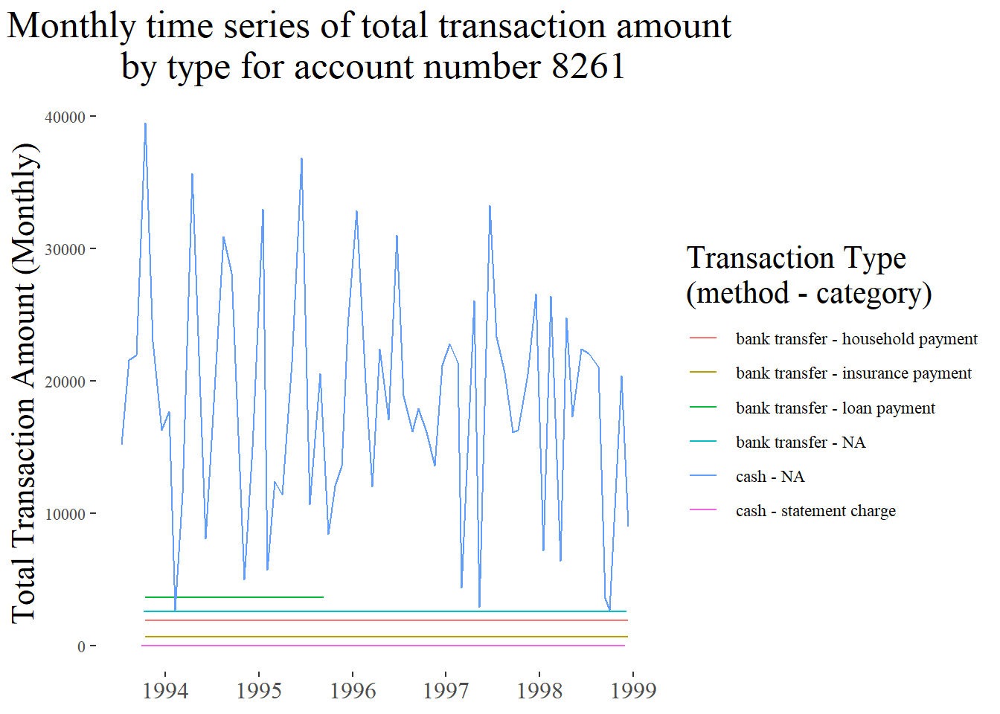

knitr::opts_chunk$set(echo = TRUE)
knitr::opts_chunk$set(message = FALSE)
library(pacman)
p_load(tidyverse)
p_load(ggthemes)
p_load(lubridate)
# read in data
accounts_data <- read_csv('data/accounts_analytical.csv')
transactions_data <- read_csv('data/transactions.csv')
# find the account number with the most transactions
max_acct_transactions <- transactions_data %>% group_by(account_id) %>% count() %>% arrange(desc(n)) %>% head(1) %>% pull(account_id)
# get the transaction data on that account
df_max_acct <- transactions_data %>% filter(account_id == max_acct_transactions)The first time series plot shows the balance of account number 8261
# set up aes layer
ggplot(df_max_acct,
aes(x = date,
y = balance)) +
# geom layer
geom_line() +
# modify x axis
scale_x_date(date_breaks = "1 year", date_labels ="%Y") +
# labels
labs(title = paste("Time series of account balance\nfor account number",max_acct_transactions),
x = NULL,
y = "Account Balance") +
# theme info
theme_tufte() +
theme(title = element_text(size = 16),
axis.text.x = element_text(size = 12),
plot.title = element_text(hjust = 0.5))
This plot is pretty noisy because there are a lot of transactions in short periods of time. If we aggregate to a monthly frequency, we can see how the average balance for each month results in a smoother curve. We notice the general decline in balance over time much more clearly at a monthly frequency than when we look at every balance.
df_max_acct_monthly <- df_max_acct %>%
group_by(year(date),month(date)) %>%
summarize(balance = mean(balance), date = max(date))
# set up aes layer
ggplot(df_max_acct_monthly,
aes(x = date,
y = balance)) +
# geom layer
geom_line() +
# modify x axis
scale_x_date(date_breaks = "1 year", date_labels ="%Y") +
# labels
labs(title = paste("Monthly time series of account balance\nfor account number",max_acct_transactions),
x = NULL,
y = "Account Balance") +
# theme info
theme_tufte() +
theme(title = element_text(size = 16),
axis.text.x = element_text(size = 12),
plot.title = element_text(hjust = 0.5))
The next plot shows the credit and debit activity of the account to see if there were changes in the number of transactions made.
# calculate the number of debit and credit transactions for each month
df_account_usage <- df_max_acct %>%
group_by(year(date),month(date)) %>%
summarize(sum_credit = sum(type == "credit"),
sum_debit = sum(type == "debit"),
date = mean(date)) %>%
ungroup() %>%
select(date, sum_debit, sum_credit) %>%
pivot_longer(-date)
# set up aes layer
ggplot(df_account_usage,
aes(x = date,
y = value,
color = name)) +
# geom layer
geom_line() +
# modify x axis
scale_x_date(date_breaks = "1 year", date_labels ="%Y") +
# modify fill axis
scale_color_discrete(breaks = c('sum_credit','sum_debit'), labels = c('Credit (deposit)','Debit (withdrawal)')) +
# labels
labs(title = paste("Monthly time series of account activties\nfor account number",max_acct_transactions),
x = NULL,
y = "Number of Transactions in a Month",
color = 'Transaction Type') +
# theme info
theme_tufte() +
theme(title = element_text(size = 16),
axis.text.x = element_text(size = 12),
plot.title = element_text(hjust = 0.5))
The final plot shows the total debit transaction amount for each method and category breakdown over time on a monthly frequency. The case transaction are the most variable for account 8261. If there is a second month with a high transaction volume in cash, the bank might consider flagging it since it only tends to happen every few months.
# calculate the number of debit and credit transactions for each month
df_account_usage <- df_max_acct %>%
filter(type == 'debit') %>%
mutate(category = if_else(is.na(category),'NA',category)) %>%
group_by(year(date),month(date), category, method) %>%
summarize(tot_trans = sum(amount),
date = mean(date)) %>%
ungroup() %>%
select(date, method, category, tot_trans) %>%
mutate(method_category = paste(method,'-',category))
# set up aes layer
ggplot(df_account_usage,
aes(x = date,
y = tot_trans,
color = method_category)) +
# geom layer
geom_line() +
# modify x axis
scale_x_date(date_breaks = "1 year", date_labels ="%Y") +
# labels
labs(title = paste("Monthly time series of total transaction amount \nby type for account number",max_acct_transactions),
x = NULL,
y = "Total Transaction Amount (Monthly)",
color = 'Transaction Type\n(method - category)') +
# theme info
theme_tufte() +
theme(title = element_text(size = 16),
axis.text.x = element_text(size = 12),
plot.title = element_text(hjust = 0.5))